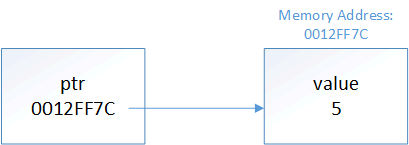

12.7 — Introduction aux pointeurs
Les pointeurs sont l'un des épouvantails historiques du C++, et un point où de nombreux apprenants se bloquent. Pourtant, comme vous le verrez bientôt, les pointeurs n'ont rien d'effrayant.
En fait, les pointeurs se comportent beaucoup comme des références lvalue. Mais avant d'aller plus loin sur ce point, faisons quelques préparatifs.
Contenu associé
Si vous êtes rouillé ou peu familier avec les références lvalue, c'est le moment idéal pour les revoir. Nous les abordons dans les leçons 12.3 -- Références lvalue, 12.4 -- Références lvalue vers const et 12.5 -- Passage par référence lvalue.
Considérons une variable ordinaire, comme celle-ci :
char x {}; // les char utilisent 1 octet de mémoire
En simplifiant un peu, lorsque le code généré pour cette définition est exécuté, une zone de mémoire de la RAM est attribuée à cet objet. Supposons, pour l'exemple, que la variable x se voie attribuer l'adresse mémoire 140. Chaque fois que nous utilisons la variable x dans une expression ou une instruction, le programme se rend à l'adresse mémoire 140 pour accéder à la valeur qui y est stockée.
L'avantage des variables est que nous n'avons pas à nous soucier des adresses mémoire précises qui leur sont attribuées, ni du nombre d'octets nécessaires pour stocker la valeur de l'objet. Nous nous contentons de désigner la variable par son identifiant, et le compilateur traduit ce nom en l'adresse mémoire qui lui correspond. Le compilateur se charge de toute la gestion des adresses.
Il en va de même pour les références :
int main()
{
char x {}; // supposons que cette variable se voie attribuer l'adresse mémoire 140
char& ref { x }; // ref est une référence lvalue vers x (utilisé avec un type, & désigne une référence lvalue)
return 0;
}
Comme ref est un alias de x, chaque fois que nous utilisons ref, le programme se rend à l'adresse mémoire 140 pour accéder à la valeur. Là encore, le compilateur se charge de la gestion des adresses, sans que nous ayons à y penser.
L'opérateur d'adresse (&)
Bien que les adresses mémoire utilisées par les variables ne nous soient pas exposées par défaut, nous pouvons tout de même accéder à cette information. L'opérateur d'adresse (&) renvoie l'adresse mémoire de son opérande. C'est assez simple :
#include <iostream>
int main()
{
int x{ 5 };
std::cout << x << '\n'; // affiche la valeur de la variable x
std::cout << &x << '\n'; // affiche l'adresse mémoire de la variable x
return 0;
}
Sur la machine de l'auteur, le programme ci-dessus a affiché :
5
0027FEA0
Dans l'exemple ci-dessus, nous utilisons l'opérateur d'adresse (&) pour récupérer l'adresse attribuée à la variable x et l'afficher dans la console. Les adresses mémoire sont généralement affichées sous forme de valeurs hexadécimales (nous avons vu l'hexadécimal dans la leçon 5.3 -- Systèmes de numération (décimal, binaire, hexadécimal et octal)), souvent sans le préfixe 0x.
Pour les objets qui utilisent plus d'un octet de mémoire, l'opérateur d'adresse renvoie l'adresse mémoire du premier octet utilisé par l'objet.
Astuce
Le symbole & prête souvent à confusion, car il a des sens différents selon le contexte :
- Placé après un nom de type, & désigne une référence lvalue :
int& ref. - Utilisé comme opérateur unaire dans une expression, & est l'opérateur d'adresse :
std::cout << &x. - Utilisé comme opérateur binaire dans une expression, & est l'opérateur ET bit à bit :
std::cout << x & y.
L'opérateur de déréférencement (*)
Obtenir l'adresse d'une variable n'est pas très utile en soi.
Ce que l'on peut faire de plus utile avec une adresse, c'est accéder à la valeur qui y est stockée. L'opérateur de déréférencement (*) (parfois appelé opérateur d'indirection) renvoie la valeur située à une adresse mémoire donnée, sous forme de lvalue :
#include <iostream>
int main()
{
int x{ 5 };
std::cout << x << '\n'; // affiche la valeur de la variable x
std::cout << &x << '\n'; // affiche l'adresse mémoire de la variable x
std::cout << *(&x) << '\n'; // affiche la valeur située à l'adresse mémoire de la variable x (les parenthèses ne sont pas nécessaires, mais facilitent la lecture)
return 0;
}
Sur la machine de l'auteur, le programme ci-dessus a affiché :
5
0027FEA0
5
Ce programme est assez simple. Nous déclarons d'abord une variable x et affichons sa valeur. Puis nous affichons l'adresse de la variable x. Enfin, nous utilisons l'opérateur de déréférencement pour obtenir la valeur située à l'adresse mémoire de x (qui n'est autre que la valeur de x), et nous l'affichons dans la console.
Point clé
Étant donnée une adresse mémoire, nous pouvons utiliser l'opérateur de déréférencement (*) pour obtenir la valeur située à cette adresse (sous forme de lvalue).
L'opérateur d'adresse (&) et l'opérateur de déréférencement (*) sont opposés : l'adresse permet d'obtenir l'adresse d'un objet, et le déréférencement permet d'obtenir l'objet situé à une adresse.
Astuce
Bien que l'opérateur de déréférencement ressemble à l'opérateur de multiplication, vous pouvez les distinguer : l'opérateur de déréférencement est unaire, alors que l'opérateur de multiplication est binaire.
Obtenir l'adresse d'une variable puis déréférencer immédiatement cette adresse pour obtenir une valeur n'est pas non plus très utile (après tout, il suffit d'utiliser la variable pour accéder à la valeur).
Mais maintenant que nous disposons des opérateurs d'adresse (&) et de déréférencement (*), nous sommes prêts à parler des pointeurs.
Les pointeurs
Un pointeur est un objet qui contient, comme valeur, une adresse mémoire (généralement celle d'une autre variable). Cela nous permet de stocker l'adresse d'un autre objet pour l'utiliser plus tard.
En passant…
En C++ moderne, les pointeurs dont nous parlons ici sont parfois appelés « pointeurs bruts » (raw pointers) ou « pointeurs idiots » (dumb pointers), afin de les distinguer des « pointeurs intelligents » (smart pointers) introduits plus récemment dans le langage. Nous aborderons les pointeurs intelligents dans le chapitre 22.
Un type qui désigne un pointeur (par exemple int*) est appelé un type pointeur. De la même manière que les types référence se déclarent avec le caractère esperluette (&), les types pointeur se déclarent avec un astérisque (*) :
int; // un int ordinaire
int&; // une référence lvalue vers une valeur int
int*; // un pointeur vers une valeur int (contient l'adresse d'un entier)
Pour créer une variable pointeur, il suffit de définir une variable d'un type pointeur :
int main()
{
int x { 5 }; // variable ordinaire
int& ref { x }; // une référence vers un entier (liée à x)
int* ptr; // un pointeur vers un entier
return 0;
}
Notez que cet astérisque fait partie de la syntaxe de déclaration des pointeurs, et ne constitue pas l'utilisation de l'opérateur de déréférencement.
Bonne pratique
Lors de la déclaration d'un type pointeur, placez l'astérisque à côté du nom du type.
Attention
Bien qu'il soit généralement déconseillé de déclarer plusieurs variables sur une même ligne, si vous le faites, l'astérisque doit être présent devant chaque variable.
int* ptr1, ptr2; // incorrect : ptr1 est un pointeur vers un int, mais ptr2 est simplement un int !
int* ptr3, * ptr4; // correct : ptr3 et ptr4 sont tous deux des pointeurs vers un int
Certains soutiennent qu'il faut placer l'astérisque à côté du nom de la variable plutôt que du type, mais il est préférable d'éviter de définir plusieurs variables dans une même instruction.
Initialisation des pointeurs
Comme les variables ordinaires, les pointeurs ne sont pas initialisés par défaut. Un pointeur non initialisé est parfois appelé pointeur sauvage (wild pointer). Un pointeur sauvage contient une adresse quelconque, et déréférencer un pointeur sauvage entraîne un comportement indéfini. C'est pourquoi vous devriez toujours initialiser vos pointeurs avec une valeur connue.
Bonne pratique
Initialisez toujours vos pointeurs.
int main()
{
int x{ 5 };
int* ptr; // un pointeur non initialisé (contient une adresse quelconque)
int* ptr2{}; // un pointeur nul (nous en parlerons dans la prochaine leçon)
int* ptr3{ &x }; // un pointeur initialisé avec l'adresse de la variable x
return 0;
}
Comme les pointeurs contiennent des adresses, lorsque nous initialisons ou affectons une valeur à un pointeur, cette valeur doit être une adresse. En général, les pointeurs servent à contenir l'adresse d'une autre variable (que l'on obtient avec l'opérateur d'adresse (&)).
Une fois qu'un pointeur contient l'adresse d'un autre objet, nous pouvons utiliser l'opérateur de déréférencement (*) pour accéder à la valeur située à cette adresse. Par exemple :
#include <iostream>
int main()
{
int x{ 5 };
std::cout << x << '\n'; // affiche la valeur de la variable x
int* ptr{ &x }; // ptr contient l'adresse de x
std::cout << *ptr << '\n'; // utilise l'opérateur de déréférencement pour afficher la valeur située à l'adresse contenue dans ptr (c'est-à-dire l'adresse de x)
return 0;
}
Ce programme affiche :
5
5
Conceptuellement, on peut se représenter l'extrait ci-dessus de la façon suivante :

C'est de là que les pointeurs tirent leur nom : ptr contient l'adresse de x, on dit donc que ptr « pointe vers » x.
Note de l'auteur
Une remarque sur la terminologie : « pointeur X » (où X est un type) est une abréviation courante de « pointeur vers un X ». Ainsi, lorsque nous disons « un pointeur d'entier », nous voulons dire « un pointeur vers un entier ». Cette compréhension sera précieuse lorsque nous aborderons les pointeurs const.
Tout comme le type d'une référence doit correspondre au type de l'objet référencé, le type d'un pointeur doit correspondre au type de l'objet pointé :
int main()
{
int i{ 5 };
double d{ 7.0 };
int* iPtr{ &i }; // ok : un pointeur vers un int peut pointer vers un objet int
int* iPtr2 { &d }; // non valide : un pointeur vers un int ne peut pas pointer vers un objet double
double* dPtr{ &d }; // ok : un pointeur vers un double peut pointer vers un objet double
double* dPtr2{ &i }; // non valide : un pointeur vers un double ne peut pas pointer vers un objet int
return 0;
}
À une exception près, que nous verrons dans la prochaine leçon, initialiser un pointeur avec une valeur littérale est interdit :
int* ptr{ 5 }; // non valide
int* ptr{ 0x0012FF7C }; // non valide, 0x0012FF7C est traité comme un littéral entier
Pointeurs et affectation
Nous pouvons utiliser l'affectation avec les pointeurs de deux manières différentes :
- Pour changer ce que pointe le pointeur (en lui affectant une nouvelle adresse)
- Pour changer la valeur pointée (en affectant une nouvelle valeur à l'objet déréférencé)
Commençons par un cas où un pointeur est modifié pour pointer vers un autre objet :
#include <iostream>
int main()
{
int x{ 5 };
int* ptr{ &x }; // ptr initialisé pour pointer vers x
std::cout << *ptr << '\n'; // affiche la valeur située à l'adresse pointée (l'adresse de x)
int y{ 6 };
ptr = &y; // // modifie ptr pour qu'il pointe vers y
std::cout << *ptr << '\n'; // affiche la valeur située à l'adresse pointée (l'adresse de y)
return 0;
}
Le programme ci-dessus affiche :
5
6
Dans cet exemple, nous définissons le pointeur ptr, l'initialisons avec l'adresse de x, et déréférençons le pointeur pour afficher la valeur pointée (5). Nous utilisons ensuite l'opérateur d'affectation pour changer l'adresse contenue dans ptr en l'adresse de y. Nous déréférençons de nouveau le pointeur pour afficher la valeur pointée (qui vaut maintenant 6).
Voyons maintenant comment un pointeur permet aussi de modifier la valeur pointée :
#include <iostream>
int main()
{
int x{ 5 };
int* ptr{ &x }; // initialise ptr avec l'adresse de la variable x
std::cout << x << '\n'; // affiche la valeur de x
std::cout << *ptr << '\n'; // affiche la valeur située à l'adresse contenue dans ptr (l'adresse de x)
*ptr = 6; // l'objet situé à l'adresse contenue dans ptr (x) reçoit la valeur 6 (notez que ptr est déréférencé ici)
std::cout << x << '\n';
std::cout << *ptr << '\n'; // affiche la valeur située à l'adresse contenue dans ptr (l'adresse de x)
return 0;
}
Ce programme affiche :
5
5
6
6
Dans cet exemple, nous définissons le pointeur ptr, l'initialisons avec l'adresse de x, puis affichons les valeurs de x et de *ptr (5). Comme *ptr renvoie une lvalue, nous pouvons l'utiliser à gauche d'une instruction d'affectation, ce que nous faisons pour changer la valeur pointée par ptr en 6. Nous affichons ensuite de nouveau les valeurs de x et de *ptr pour montrer que la valeur a bien été mise à jour.
Point clé
Lorsque nous utilisons un pointeur sans déréférencement (ptr), nous accédons à l'adresse contenue dans le pointeur. La modifier (ptr = &y) change ce que pointe le pointeur.
Lorsque nous déréférençons un pointeur (*ptr), nous accédons à l'objet pointé. La modifier (*ptr = 6;) change la valeur de l'objet pointé.
Les pointeurs se comportent beaucoup comme des références lvalue
Les pointeurs et les références lvalue se comportent de manière similaire. Considérons le programme suivant :
#include <iostream>
int main()
{
int x{ 5 };
int& ref { x }; // obtient une référence vers x
int* ptr { &x }; // obtient un pointeur vers x
std::cout << x;
std::cout << ref; // utilise la référence pour afficher la valeur de x (5)
std::cout << *ptr << '\n'; // utilise le pointeur pour afficher la valeur de x (5)
ref = 6; // utilise la référence pour modifier la valeur de x
std::cout << x;
std::cout << ref; // utilise la référence pour afficher la valeur de x (6)
std::cout << *ptr << '\n'; // utilise le pointeur pour afficher la valeur de x (6)
*ptr = 7; // utilise le pointeur pour modifier la valeur de x
std::cout << x;
std::cout << ref; // utilise la référence pour afficher la valeur de x (7)
std::cout << *ptr << '\n'; // utilise le pointeur pour afficher la valeur de x (7)
return 0;
}
Ce programme affiche :
555
666
777
Dans ce programme, nous créons une variable ordinaire x de valeur 5, puis une référence lvalue et un pointeur vers x. Ensuite, nous utilisons la référence lvalue pour faire passer la valeur de 5 à 6, et nous montrons que cette valeur mise à jour est accessible par les trois moyens. Enfin, nous utilisons le pointeur déréférencé pour faire passer la valeur de 6 à 7, et montrons de nouveau que la valeur mise à jour est accessible par les trois moyens.
Ainsi, pointeurs et références offrent tous deux un moyen d'accéder indirectement à un autre objet. La principale différence est qu'avec les pointeurs, nous devons explicitement obtenir l'adresse à pointer, et nous devons explicitement déréférencer le pointeur pour obtenir la valeur. Avec les références, la prise d'adresse et le déréférencement se font implicitement.
Il existe d'autres différences entre pointeurs et références qui méritent d'être mentionnées :
- Les références doivent être initialisées, les pointeurs ne sont pas obligés de l'être (mais devraient l'être).
- Les références ne sont pas des objets, les pointeurs en sont.
- Une référence ne peut pas être réaffectée (changée pour désigner autre chose), alors qu'un pointeur peut changer ce qu'il pointe.
- Une référence doit toujours être liée à un objet, alors qu'un pointeur peut ne rien pointer (nous en verrons un exemple dans la prochaine leçon).
- Les références sont « sûres » (hormis les références pendantes), alors que les pointeurs sont intrinsèquement dangereux (nous en discuterons également dans la prochaine leçon).
L'opérateur d'adresse renvoie un pointeur
Il convient de noter que l'opérateur d'adresse (&) ne renvoie pas l'adresse de son opérande sous forme de littéral (le C++ ne prend pas en charge les littéraux d'adresse). Il renvoie plutôt un pointeur vers l'opérande (dont la valeur est l'adresse de l'opérande). Autrement dit, étant donnée une variable int x, &x renvoie un int* contenant l'adresse de x.
Nous pouvons le voir dans l'exemple suivant :
#include <iostream>
#include <typeinfo>
int main()
{
int x{ 4 };
std::cout << typeid(x).name() << '\n'; // affiche le type de x
std::cout << typeid(&x).name() << '\n'; // affiche le type de &x
return 0;
}
Sous Visual Studio, ce programme affiche :
int
int *
Avec gcc, il affiche à la place i (int) et Pi (pointeur vers int). Le résultat de typeid().name() dépend du compilateur : le vôtre peut donc afficher autre chose, mais avec la même signification.
La taille des pointeurs
La taille d'un pointeur dépend de l'architecture pour laquelle l'exécutable est compilé : un exécutable 32 bits utilise des adresses mémoire de 32 bits. Par conséquent, un pointeur sur une machine 32 bits occupe 32 bits (4 octets). Avec un exécutable 64 bits, un pointeur occupe 64 bits (8 octets). Notez que cela est vrai quelle que soit la taille de l'objet pointé :
#include <iostream>
int main() // supposons une application 32 bits
{
char* chPtr{}; // les char occupent 1 octet
int* iPtr{}; // les int occupent généralement 4 octets
long double* ldPtr{}; // les long double occupent généralement 8 ou 12 octets
std::cout << sizeof(chPtr) << '\n'; // affiche 4
std::cout << sizeof(iPtr) << '\n'; // affiche 4
std::cout << sizeof(ldPtr) << '\n'; // affiche 4
return 0;
}
La taille du pointeur est toujours la même. En effet, un pointeur n'est qu'une adresse mémoire, et le nombre de bits nécessaires pour accéder à une adresse mémoire est constant.
Pointeurs pendants
Comme une référence pendante, un pointeur pendant (dangling pointer) est un pointeur qui contient l'adresse d'un objet qui n'est plus valide (par exemple parce qu'il a été détruit).
Déréférencer un pointeur pendant (par exemple pour afficher la valeur pointée) entraîne un comportement indéfini, puisque l'on tente d'accéder à un objet qui n'est plus valide.
Chose peut-être surprenante, la norme indique que « toute autre utilisation d'une valeur de pointeur invalide a un comportement défini par l'implémentation ». Cela signifie que vous pouvez affecter à un pointeur invalide une nouvelle valeur, comme nullptr (car cela n'utilise pas la valeur du pointeur invalide). En revanche, toute autre opération qui utilise la valeur du pointeur invalide (comme le copier ou l'incrémenter) produira un comportement défini par l'implémentation.
Point clé
Déréférencer un pointeur invalide entraîne un comportement indéfini. Toute autre utilisation d'une valeur de pointeur invalide est définie par l'implémentation.
Voici un exemple de création d'un pointeur pendant :
#include <iostream>
int main()
{
int x{ 5 };
int* ptr{ &x };
std::cout << *ptr << '\n'; // valide
{
int y{ 6 };
ptr = &y;
std::cout << *ptr << '\n'; // valide
} // y sort de sa portée et ptr est maintenant pendant
std::cout << *ptr << '\n'; // comportement indéfini dû au déréférencement d'un pointeur pendant
return 0;
}
Le programme ci-dessus affichera probablement :
5
6
6
Mais ce n'est pas certain, car l'objet pointé par ptr est sorti de sa portée et a été détruit à la fin du bloc interne, laissant ptr pendant.
Conclusion
Les pointeurs sont des variables qui contiennent une adresse mémoire. On peut les déréférencer à l'aide de l'opérateur de déréférencement (*) pour récupérer la valeur située à l'adresse qu'ils contiennent. Déréférencer un pointeur sauvage, pendant ou nul entraîne un comportement indéfini et provoquera probablement le plantage de votre application.
Les pointeurs sont à la fois plus souples que les références et plus dangereux. Nous continuerons à explorer ce point dans les prochaines leçons.
Quiz
Question n° 1
Quelles valeurs ce programme affiche-t-il ? Supposez qu'un short occupe 2 octets, et que la machine est 32 bits.
#include <iostream>
int main()
{
short value{ 7 }; // &value = 0012FF60
short otherValue{ 3 }; // &otherValue = 0012FF54
short* ptr{ &value };
std::cout << &value << '\n';
std::cout << value << '\n';
std::cout << ptr << '\n';
std::cout << *ptr << '\n';
std::cout << '\n';
*ptr = 9;
std::cout << &value << '\n';
std::cout << value << '\n';
std::cout << ptr << '\n';
std::cout << *ptr << '\n';
std::cout << '\n';
ptr = &otherValue;
std::cout << &otherValue << '\n';
std::cout << otherValue << '\n';
std::cout << ptr << '\n';
std::cout << *ptr << '\n';
std::cout << '\n';
std::cout << sizeof(ptr) << '\n';
std::cout << sizeof(*ptr) << '\n';
return 0;
}
Solution
0012FF60
7
0012FF60
7
0012FF60
9
0012FF60
9
0012FF54
3
0012FF54
3
4
2
Brève explication concernant le 4 et le 2. Une machine 32 bits signifie que les pointeurs font 32 bits de long, mais sizeof() renvoie toujours la taille en octets. 32 bits équivalent à 4 octets. Ainsi, sizeof(ptr) vaut 4. Comme ptr est un pointeur vers un short, *ptr est un short. La taille d'un short dans cet exemple est de 2 octets. Ainsi, sizeof(*ptr) vaut 2.
Question n° 2
Quel est le problème avec cet extrait de code ?
int v1{ 45 };
int* ptr{ &v1 }; // initialise ptr avec l'adresse de v1
int v2 { 78 };
*ptr = &v2; // affecte à ptr l'adresse de v2
Solution
La dernière ligne de l'extrait ci-dessus ne compile pas.
Examinons ce programme plus en détail.
La première et la quatrième ligne contiennent des définitions de variables ordinaires, avec une valeur d'initialisation. Rien de spécial ici.
À la deuxième ligne, l'astérisque fait partie de la syntaxe de déclaration du pointeur (et non un déréférencement). Cette ligne signifie donc « affecte l'adresse de v1 à ptr ». C'est correct, puisque les pointeurs contiennent des adresses.
À la cinquième ligne, l'astérisque représente un déréférencement, qui sert à obtenir la valeur pointée par un pointeur. Cette ligne signifie donc « affecte l'adresse de v2 à la valeur pointée par ptr ». La valeur pointée par ptr est un entier. Cette affectation n'a donc aucun sens : on ne peut pas affecter une adresse à un entier !
La cinquième ligne devrait être :
ptr = &v2;
Ceci affecte correctement l'adresse de v2 au pointeur.
Source originale : https://www.learncpp.com/cpp-tutorial/introduction-to-pointers/